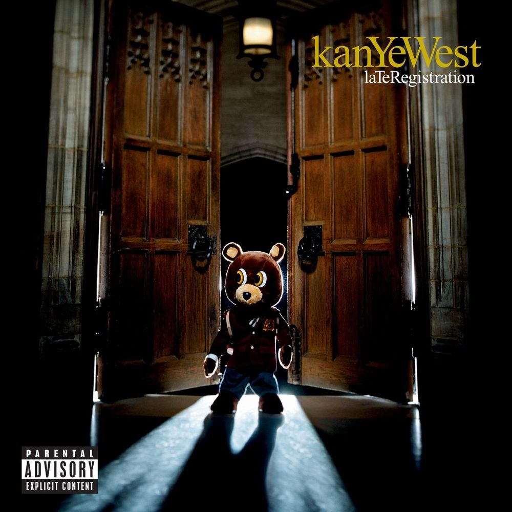

About
As Kanye West would doubtless tell you himself, he is a 21st-century phenomenon — a producer turned rap superstar who has reinvented hip hop several times over in the course of a stellar career; but whose creative genius is sometimes eclipsed by his talent for putting his entire foot in his own mouth. He has made headlines for his bizarre tweets and his grand pronouncements, his award-show stage invasions, his outré fashion sense and his flashbulb-popping marriage to Kim Kardashian. But when West channels his hubristic impulses into his music, the results have rarely been less than thrilling: hence eight solo albums debuting at No. 1 and 21 Grammy awards — no rapper has won more; two inclusions in Time magazine's 100 most influential people list.
Kanye West was born in Atlanta, Georgia, on June 8, 1977. His father, Ray, was a photojournalist for the Atlanta Journal newspaper and was also politically active in the Black Panthers; he later became a Christian counselor. West's mother, Donda, was a teacher who became a professor of English at Chicago State University, and eventually, her son's manager before she died at the age of 58 from heart disease after cosmetic surgery in 2007. Her passing would profoundly affect West musically as well as personally. Ray and Donda divorced amicably when West was three. After that he was raised on Chicago's middle-class South Shore neighborhood by his mother, and spent summers with his father. At the age of 10, West moved for a year with Donda to China, where she taught as part of a university-exchange program; he was the only foreigner in his class. After returning to Chicago, West was drawn to the South Side's hip-hop scene, and he befriended the DJ and producer No I.D., who became his mentor. West graduated from Polaris High School and won a scholarship to study at Chicago's American Academy of Art — but dropped out of college altogether to pursue music, an act that would inform the title of his first solo album years later.
After spending time producing for local artists, West developed a signature style, dubbed "chipmunk soul," characterised by sped-up soul samples. He then moved to New York in 2001. Here he got his big break handling the production for the Jay Z track "This Can't Be Life," which appeared on the 2000 album Dynasty: Roc La Familia. The following year he cemented his burgeoning reputation by producing four songs on Jay Z's The Blueprint, widely regarded as one of the greatest rap albums of all time. From there, West went on to produce for other stellar talents, including the rappers Mos Def, Talib Kweli and Ludacris, and the singers Alicia Keys and Beyoncé. But West was not content to be a backroom player. He wanted to be the headline act. But he initially struggled to be taken seriously as a rapper — he lacked the "gangsta" credentials that were prerequisite at the time: he was an arty middle-class kid who wore pink polo shirts and Gucci loafers. He pleaded with Roc-A-Fella records to let him rap, but as co-founder Jay Z later told Time magazine: "We all grew up street guys who had to do whatever we had to do to get by. Then there's Kanye, who to my knowledge has never hustled a day in his life. I didn't see how it could work." West got a similar response from other labels. "I'd leave meetings crying all the time," he recalled. With reluctance Damon Dash signed West to Roc-A-Fella in 2002, but he did so mostly to retain him as a producer. That October, as West was driving home from a recording session in a California studio, he was involved in a head-on car collision that left him with a shattered jaw. He wrote and recorded a song about the experience, "Through the Wire," with his jaw still wired shut following reconstructive surgery. He then wrote much of the rest of his debut album while recuperating in LA. But once the album was complete, it was leaked online. In response, West decided to make it better: he revised and rewrote songs and refined the production, adding stronger drums, gospel choirs and strings (he paid for orchestras out of his own pocket).
Albums
The College Dropout

The College Dropout is the debut studio album by American rapper and producer Kanye West. It was released on February 10, 2004, by Def Jam Recordings and Roc-A-Fella Records. The College Dropout debuted at number two on the US Billboard 200, selling 441,000 copies in its first week of sales. It was a massive commercial success, becoming West's best-selling album in the United States, with domestic sales of over 3.4 million copies by 2014.
The Late Registration
Late Registration is the second studio album by American rapper and producer Kanye West. It was released on August 30, 2005, by Def Jam Recordings and Roc-A-Fella Records. In its first week of release, Late Registration debuted at number one on the Billboard 200 chart and sold 860,000 copies. It eventually reached sales of over 3.1 million copies in the United States and has been certified triple platinum by the Recording Industry Association of America.
Graduation

Graduation is the third studio album by American rapper Kanye West, released on September 11, 2007 by Roc-A-Fella Records. Graduation debuted at number-one on the US Billboard 200, selling over 957,000 copies in its first week of sales.
808s and Heartbreak
808s & Heartbreak is the fourth studio album by American hip hop producer and vocalist Kanye West. It was released on November 24, 2008, by Roc-A-Fella Records. 808s & Heartbreak debuted at number one on the Billboard 200, selling 450,145 copies in its first week. Despite varying responses from listeners, the album received positive reviews from most critics and was named one of 2008's best records in several year-end lists.
My Beautiful Dark Twisted Fantasy

My Beautiful Dark Twisted Fantasy is the fifth studio album by American rapper and producer Kanye West. It was released on November 22, 2010, by Def Jam Recordings and Roc-A-Fella Records. My Beautiful Dark Twisted Fantasy debuted at number one on the Billboard 200 and eventually sold over 1.3 million copies in the United States. The album was a widespread critical success and named the best of 2010 in many publications' critics polls, including the Pazz & Jop. Several professionally curated lists later ranked it among the greatest albums of all time.
Watch The Throne

Watch the Throne is a collaborative studio album by American rappers Jay-Z and Kanye West, released on August 8, 2011 by Roc-A-Fella Records, Roc Nation, and Def Jam Recordings. Watch the Throne debuted at number one on the US Billboard 200, selling 436,000 copies its first week. While some critics found its lyrical content uninspiring, its production and the rappers' performances were generally praised. Many critics and publications placed the album in their year-end best-of lists. It also earned Jay-Z and West seven Grammy Award nominations, and was certified platinum in the US.
Yeezus
Yeezus is the sixth studio album by American rapper and producer Kanye West. It was released on June 18, 2013, by Def Jam Recordings. Yeezus received widespread acclaim from critics, many of whom named it among West's best work and commended its brash direction, though public response was divided. The album debuted at number one on the Billboard 200, selling 327,000 copies in its first week of release. It charted in 30 other countries, including also topping the charts in the United Kingdom and Australia. Yeezus was nominated in two categories at the 2014 Grammy Awards, including Best Rap Album. As of 2016, the album has sold 750,000 copies in the United States.
The Life of Pablo

The Life of Pablo is the seventh studio album by American rapper and producer Kanye West. It was released on February 14, 2016, through GOOD Music and distributed by Def Jam Recordings. Recording sessions took place from 2013 to 2016, in Italy, Mexico, Canada, and the United States.
Ye
Ye (/jeɪ/; stylized as ye) is the eighth studio album by American rapper and producer Kanye West. It was released on June 1, 2018, through GOOD Music and distributed by Def Jam Recordings. Following controversy surrounding an interview with TMZ, West re-recorded all the work on the album, completing it over the course of just two weeks at his ranch in Jackson Hole, Wyoming.
Tours
School Spirit Tour
The School Spirit Tour was Kanye West’s very first headline tour, in 2004. The tour featured a collegiate theme. Not only did it kick off at Virginia Tech, it hit a number of college towns across the states—from Pace University in New York to George Washington University in DC, ending with three shows at House of Blues in West’s hometown, Chicago. The tour was opened by Dilated Peoples, and featured John Legend as the pianist and signer, along with A-Trak as tour DJ. Onstage, West paced in front of seven slim LED-screens, with the Chicago cityscape as his background.
Touch The Sky Tour
The Touch the Sky Tour was announced on September, 15 2005 and started off with a few hiccups, with West making changes right down to the last minute. West scrapped the Touch the Sky Tour’s entire lighting plan just two weeks before the opening show in Miami. The tour was completely redone by new tour designer Es Devlin just a fortnight before opening night. Following this, just days before West was meant to start touring, opening act Common announced he couldn’t make it, as he’d just landed an acting role. This left West with Fantasia and Keyshia Cole for his opening acts, although Common would appear when his schedule allowed. In the end, the stage show was accompanied by a six-piece string section and featured live video of the show projected behind the stage. Negative reviews of his music and character were projected behind the stage, and he wore six different costume pieces (designer blazers).There was UK arena tour in February 2006 in the cities of Manchester, Glasgow, London, Cardiff and Birmingham. Australia tour commenced in late March, early April 2006.
Glow In The Dark Tour
The Glow in the Dark Tour was West's first worldwide tour and also included his first truly extraordinary stage. The Glow In The Dark Tour crammed in more than 50 arena and festival shows in the U.S., Canada, and the U.K. before heading to Mexico and then across the Pacific, via South America, to the Far East and Europe. The tours opening acts were Rihanna, Lupe Fiasco and Rihanna. The concept pitted West as the pilot of a spaceship hitting a meteor storm, landing on a desolate planet of dry ice, and trying to find his way home through tracks from The College Dropout, Late Registration, Graduation, and latterly 808s & Heartbreak. With design again done by Es Devlin, in collaboration with Martin Phillips and John McGuire, the stage was transformed into a barren series of landscapes—one resembling a giant moon—and fantastical glow-in-the-dark features: a giant, glowing-eyed monster and a robot moved within the haze, women shimmered in gold paint for the track “Gold Digger,” and stunning multi-colored light sequences lit up the often smoke-filled stage. West himself wore sci-fi themed threads, glow-in-the-dark accessories, his signature shutter shades, and gloves. The performance tour was captured in the book of photography Glow in the Dark by Nabil Elderkin.
Watch The Throne Tour
The Watch the Throne Tour with Jay-Z was in support of the pairs collaborative album Watch the Throne. The concert had no opening act and featured the two performers perched on massive video cubes showing sharks, rottweilers, crows, and tigers in a sea of darkness punctuated only by cellphone lights and piercing lasers. “Attenborough BBC wildlife content and lasers” was the brief given to stage designer Es Devlin by West for the tour. Devlin used hundreds of laser beams to create a myriad of different frames to this alternate world of geometric shapes, cascading light, wild animals, and its stars: West and Jay Z. Their habit of playing the smash hit “Niggas in Paris” eight, nine, 10, or 12 times in a row quickly become the stuff of legend. They partnered up with Givenchy for the clothing and the two donned t-shirts and leather pants. The tour grossed $95 million, and became the highest grossing hip-hop tour of all time.
Yeezus Tour
The Yeezus Tour served as West's first solo concert tour in five years, and featured a man-made mountain, diamond encrusted masks, and a catwalk, it was this tour that had the New York Post reviewer praising “an extravaganza of music and theater that gives the world windows into [West’s] erratic persona.”. This visual feast was created through collaboration between set designer Es Devlin, West’s design company DONDA, fashion house Maison Margiela, artist Vanessa Beecroft, and more. This was the tour burned into memory through those full-face masks. This was the tour where Ye staged the reincarnation of Jesus and delivered sermons on the state of the world. The Yeezus stage set and concept—featuring a giant mountain that occasionally turned into a volcano, West wore a custom-made Margiela mask that obscured his whole face. West worked closely with Maison Margiela to curate the show, and his wardrobe for the Tour was composed of 10 couture pieces, 20 ready-to-wear pieces, and an exclusive pair of sneakers, as well as the famous masks. Onstage, Devlin had constructed a mountain, which was sometimes wreathed in flames, sometimes covered with women in long white dresses. At times it would split in two halves, or become a volcano. There was an iceberg, 12 nude-nylon clad dancers, and a catwalk, alluding back to the fashion show created with Margiela. The speeches also became a key part of the Yeezus show.
Saint Pablo Tour
The Saint Pablo Tour in support of The Life of Pablo featured a "floating stage" suspended by a network of cables. West spent the entire set hovering above the crowd, performing on the stage while audiences with floor “seats” mosh and listen from below. The show took more than eight months of planning as he traveled across the world to get insights from some of the best stage designers.
Fashion
West took a break from music to focus on fashion. He had already been collaborating with labels including A Bathing Ape and Nike on limited-edition sneakers since 2006. He even reportedly interned at Gap in 2009, and later Fendi, to gain experience. He launched his first collection in Paris in 2011 — but it was widely panned. "You can't just dump some fox fur on a runway and call it luxury," sniffed Long Nguyen, style director of Flaunt magazine. West gave a wounded-sounding speech at the show's after-party. "Please be easy," he said. "Please give me a chance to grow." After his second collection a year later received a lukewarm reception, West announced he would no longer be showing in Paris. He collaborated with the French label APC on a capsule collection in 2013 and signed a $10 million deal with Adidas, launching his first apparel collection Yeezy Season 1, with the brand in October 2015. The line has had a mixed reception — although his Season 5 collection in February 2017 won praise from Anna Wintour. "I liked it a lot," she told the New York Post. "A little bit more focus than sometimes we've seen from him."